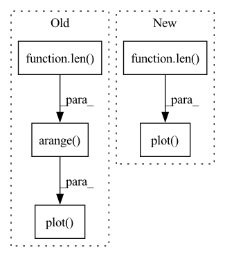

Pattern ID :6158

Before Change
ax1.legend(["Training", "Validation"])
ax2 = plt.subplot(1, 2, 2)
ax2.plot(np.arange(len(train_acc)), train_acc)
ax2.plot(np.arange(len(val_acc)), val_acc)
ax2.set_xlabel("Epoch")
ax2.set_ylabel("Accuracy")
ax2.set_title("Training and Validation Accuracy vs. Epoch")
After Change
//ax2.legend(["Training", "Validation"])
ax3 = plt.subplot(1, 3, 3)
ax3.plot(np.arange(len(top1_acc)), top1_acc)
ax3.plot(np.arange(len(top5_acc)), top5_acc)
ax3.set_xlabel("Epoch")
ax3.set_ylabel("Accuracy (%)")
ax3.set_title("Validation Top 1/5 Retrieval Accuracy vs. Epoch")
In pattern: SUPERPATTERN
Frequency: 3
Non-data size: 5
Instances
Fragment ID: 21143840
Project Name: rvl-lab-utoronto/video_similarity_search
Commit Name: 3c778caa478793a1cd266fe576f3dfdbe0165da1
Time: 2020-09-09
Author: salar77h@gmail.com
File Name: misc/generate_report.py
M Class Name: AnonimousClass
N Class Name: AnonimousClass
M Method Name: plot_training_progress(4)
N Method Name: plot_training_progress(4)
M Parent Class:
N Parent Class:
M File Name: misc/generate_report.py
N File Name: misc/generate_report.py
M Start Line: 67
M End Line: 85
N Start Line: 71
N End Line: 97
'>
Before Change
return cost
def visual_cost(self):
ax = plt.plot()
self.tsplot(ax, self.cost)
ax.set_xlabel("epoch")
ax.set_ylabel("cost")
plt.show()
After Change
def visual_cost(self):
print(self.cost)
figure, ax = plt.subplots()
nums = np.arange(len(self.cost))
ax.plot(nums, np.array(self.cost).reshape((len(self.cost,))))
ax.set_xlabel("epoch")
ax.set_ylabel("cost")
plt.show()
'>
Fragment ID: 21143838
Project Name: skylark0924/machine-learning-is-all-you-need
Commit Name: bce2a2a97eaf839e99f228e40f613bb622a8c2c7
Time: 2020-04-02
Author: 24936522+Skylark0924@users.noreply.github.com
File Name: 1Single_Linear_Regression/1Single_Linear_Regression.py
M Class Name: Skylark_LinearRegression
N Class Name: Skylark_LinearRegression
M Method Name: visual_cost(1)
N Method Name: visual_cost(1)
M Parent Class:
N Parent Class:
M File Name: 1Single_Linear_Regression/1Single_Linear_Regression.py
N File Name: 1Single_Linear_Regression/1Single_Linear_Regression.py
M Start Line: 71
M End Line: 72
N Start Line: 83
N End Line: 85
'>
Before Change
return Y
def visual_cost(self):
ax = plt.plot()
self.tsplot(ax, self.cost)
ax.set_xlabel("epoch")
ax.set_ylabel("cost")
plt.show()
After Change
def visual_cost(self):
print(self.cost)
figure, ax = plt.subplots()
nums = np.arange(len(self.cost))
ax.plot(nums, np.array(self.cost).reshape((len(self.cost,))))
ax.set_xlabel("epoch")
ax.set_ylabel("cost")
plt.show()
'>
Fragment ID: 21143839
Project Name: skylark0924/machine-learning-is-all-you-need
Commit Name: bce2a2a97eaf839e99f228e40f613bb622a8c2c7
Time: 2020-04-02
Author: 24936522+Skylark0924@users.noreply.github.com
File Name: 2Multiple_Linear_Regression/2Multiple_Linear_Regression.py
M Class Name: Skylark_LinearRegression
N Class Name: Skylark_LinearRegression
M Method Name: visual_cost(1)
N Method Name: visual_cost(1)
M Parent Class:
N Parent Class:
M File Name: 2Multiple_Linear_Regression/2Multiple_Linear_Regression.py
N File Name: 2Multiple_Linear_Regression/2Multiple_Linear_Regression.py
M Start Line: 70
M End Line: 71
N Start Line: 83
N End Line: 85